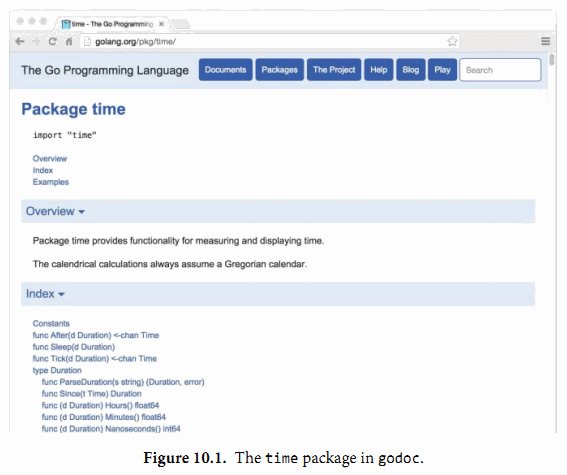

10.7. 工具
本章剩下的部分将讨论Go语言工具箱的具体功能，包括如何下载、格式化、构建、测试和安装Go语言编写的程序。
Go语言的工具箱集合了一系列功能的命令集。它可以看作是一个包管理器（类似于Linux中的apt和rpm工具），用于包的查询、计算包的依赖关系、从远程版本控制系统下载它们等任务。它也是一个构建系统，计算文件的依赖关系，然后调用编译器、汇编器和链接器构建程序，虽然它故意被设计成没有标准的make命令那么复杂。它也是一个单元测试和基准测试的驱动程序，我们将在第11章讨论测试话题。
Go语言工具箱的命令有着类似“瑞士军刀”的风格，带着一打的子命令，有一些我们经常用到，例如get、run、build和fmt等。你可以运行go或go help命令查看内置的帮助文档，为了查询方便，我们列出了最常用的命令：
$ go
...
build compile packages and dependencies
clean remove object files
doc show documentation for package or symbol
env print Go environment information
fmt run gofmt on package sources
get download and install packages and dependencies
install compile and install packages and dependencies
list list packages
run compile and run Go program
test test packages
version print Go version
vet run go tool vet on packages
Use "go help [command]" for more information about a command.
...
为了达到零配置的设计目标，Go语言的工具箱很多地方都依赖各种约定。例如，根据给定的源文件的名称，Go语言的工具可以找到源文件对应的包，因为每个目录只包含了单一的包，并且包的导入路径和工作区的目录结构是对应的。给定一个包的导入路径，Go语言的工具可以找到与之对应的存储着实体文件的目录。它还可以根据导入路径找到存储代码的仓库的远程服务器URL。
10.7.1. 工作区结构
对于大多数的Go语言用户，只需要配置一个名叫GOPATH的环境变量，用来指定当前工作目录即可。当需要切换到不同工作区的时候，只要更新GOPATH就可以了。例如，我们在编写本书时将GOPATH设置为$HOME/gobook：
$ export GOPATH=$HOME/gobook
$ go get gopl.io/...
当你用前面介绍的命令下载本书全部的例子源码之后，你的当前工作区的目录结构应该是这样的：
GOPATH/
src/
gopl.io/
.git/
ch1/
helloworld/
main.go
dup/
main.go
...
golang.org/x/net/
.git/
html/
parse.go
node.go
...
bin/
helloworld
dup
pkg/
darwin_amd64/
...
GOPATH对应的工作区目录有三个子目录。其中src子目录用于存储源代码。每个包被保存在与$GOPATH/src的相对路径为包导入路径的子目录中，例如gopl.io/ch1/helloworld相对应的路径目录。我们看到，一个GOPATH工作区的src目录中可能有多个独立的版本控制系统，例如gopl.io和golang.org分别对应不同的Git仓库。其中pkg子目录用于保存编译后的包的目标文件，bin子目录用于保存编译后的可执行程序，例如helloworld可执行程序。
第二个环境变量GOROOT用来指定Go的安装目录，还有它自带的标准库包的位置。GOROOT的目录结构和GOPATH类似，因此存放fmt包的源代码对应目录应该为$GOROOT/src/fmt。用户一般不需要设置GOROOT，默认情况下Go语言安装工具会将其设置为安装的目录路径。
其中go env命令用于查看Go语言工具涉及的所有环境变量的值，包括未设置环境变量的默认值。GOOS环境变量用于指定目标操作系统（例如android、linux、darwin或windows），GOARCH环境变量用于指定处理器的类型，例如amd64、386或arm等。虽然GOPATH环境变量是唯一必须要设置的，但是其它环境变量也会偶尔用到。
$ go env
GOPATH="/home/gopher/gobook"
GOROOT="/usr/local/go"
GOARCH="amd64"
GOOS="darwin"
...
10.7.2. 下载包
使用Go语言工具箱的go命令，不仅可以根据包导入路径找到本地工作区的包，甚至可以从互联网上找到和更新包。
使用命令go get可以下载一个单一的包或者用...下载整个子目录里面的每个包。Go语言工具箱的go命令同时计算并下载所依赖的每个包，这也是前一个例子中golang.org/x/net/html自动出现在本地工作区目录的原因。
一旦go get命令下载了包，然后就是安装包或包对应的可执行的程序。我们将在下一节再关注它的细节，现在只是展示整个下载过程是如何的简单。第一个命令是获取golint工具，它用于检测Go源代码的编程风格是否有问题。第二个命令是用golint命令对2.6.2节的gopl.io/ch2/popcount包代码进行编码风格检查。它友好地报告了忘记了包的文档：
$ go get github.com/golang/lint/golint
$ $GOPATH/bin/golint gopl.io/ch2/popcount
src/gopl.io/ch2/popcount/main.go:1:1:
package comment should be of the form "Package popcount ..."
go get命令支持当前流行的托管网站GitHub、Bitbucket和Launchpad，可以直接向它们的版本控制系统请求代码。对于其它的网站，你可能需要指定版本控制系统的具体路径和协议，例如 Git或Mercurial。运行go help importpath获取相关的信息。
go get命令获取的代码是真实的本地存储仓库，而不仅仅只是复制源文件，因此你依然可以使用版本管理工具比较本地代码的变更或者切换到其它的版本。例如golang.org/x/net包目录对应一个Git仓库：
$ cd $GOPATH/src/golang.org/x/net
$ git remote -v
origin https://go.googlesource.com/net (fetch)
origin https://go.googlesource.com/net (push)
需要注意的是导入路径含有的网站域名和本地Git仓库对应远程服务地址并不相同，真实的Git地址是go.googlesource.com。这其实是Go语言工具的一个特性，可以让包用一个自定义的导入路径，但是真实的代码却是由更通用的服务提供，例如googlesource.com或github.com。因为页面 https://golang.org/x/net/html 包含了如下的元数据，它告诉Go语言的工具当前包真实的Git仓库托管地址：
$ go build gopl.io/ch1/fetch
$ ./fetch https://golang.org/x/net/html | grep go-import
<meta name="go-import"
content="golang.org/x/net git https://go.googlesource.com/net">
如果指定-u命令行标志参数，go get命令将确保所有的包和依赖的包的版本都是最新的，然后重新编译和安装它们。如果不包含该标志参数的话，而且如果包已经在本地存在，那么代码将不会被自动更新。
go get -u命令只是简单地保证每个包是最新版本，如果是第一次下载包则是比较方便的；但是对于发布程序则可能是不合适的，因为本地程序可能需要对依赖的包做精确的版本依赖管理。通常的解决方案是使用vendor的目录用于存储依赖包的固定版本的源代码，对本地依赖的包的版本更新也是谨慎和持续可控的。在Go1.5之前，一般需要修改包的导入路径，所以复制后golang.org/x/net/html导入路径可能会变为gopl.io/vendor/golang.org/x/net/html。最新的Go语言命令已经支持vendor特性，但限于篇幅这里并不讨论vendor的具体细节。不过可以通过go help gopath命令查看Vendor的帮助文档。
(译注：墙内用户在上面这些命令的基础上，还需要学习用翻墙来go get。)
练习 10.3: 从 http://gopl.io/ch1/helloworld?go-get=1 获取内容，查看本书的代码的真实托管的网址（go get请求HTML页面时包含了go-get参数，以区别普通的浏览器请求）。
10.7.3. 构建包
go build命令编译命令行参数指定的每个包。如果包是一个库，则忽略输出结果；这可以用于检测包是可以正确编译的。如果包的名字是main，go build将调用链接器在当前目录创建一个可执行程序；以导入路径的最后一段作为可执行程序的名字。
由于每个目录只包含一个包，因此每个对应可执行程序或者叫Unix术语中的命令的包，会要求放到一个独立的目录中。这些目录有时候会放在名叫cmd目录的子目录下面，例如用于提供Go文档服务的golang.org/x/tools/cmd/godoc命令就是放在cmd子目录（§10.7.4）。
每个包可以由它们的导入路径指定，就像前面看到的那样，或者用一个相对目录的路径名指定，相对路径必须以.或..开头。如果没有指定参数，那么默认指定为当前目录对应的包。下面的命令用于构建同一个包，虽然它们的写法各不相同：
$ cd $GOPATH/src/gopl.io/ch1/helloworld
$ go build
或者：
$ cd anywhere
$ go build gopl.io/ch1/helloworld
或者：
$ cd $GOPATH
$ go build ./src/gopl.io/ch1/helloworld
但不能这样：
$ cd $GOPATH
$ go build src/gopl.io/ch1/helloworld
Error: cannot find package "src/gopl.io/ch1/helloworld".
也可以指定包的源文件列表，这一般只用于构建一些小程序或做一些临时性的实验。如果是main包，将会以第一个Go源文件的基础文件名作为最终的可执行程序的名字。
$ cat quoteargs.go
package main
import (
"fmt"
"os"
)
func main() {
fmt.Printf("%q\n", os.Args[1:])
}
$ go build quoteargs.go
$ ./quoteargs one "two three" four\ five
["one" "two three" "four five"]
特别是对于这类一次性运行的程序，我们希望尽快的构建并运行它。go run命令实际上是结合了构建和运行的两个步骤：
$ go run quoteargs.go one "two three" four\ five
["one" "two three" "four five"]
(译注：其实也可以偷懒，直接go run *.go)
第一行的参数列表中，第一个不是以.go结尾的将作为可执行程序的参数运行。
默认情况下，go build命令构建指定的包和它依赖的包，然后丢弃除了最后的可执行文件之外所有的中间编译结果。依赖分析和编译过程虽然都是很快的，但是随着项目增加到几十个包和成千上万行代码，依赖关系分析和编译时间的消耗将变的可观，有时候可能需要几秒种，即使这些依赖项没有改变。
go install命令和go build命令很相似，但是它会保存每个包的编译成果，而不是将它们都丢弃。被编译的包会被保存到$GOPATH/pkg目录下，目录路径和 src目录路径对应，可执行程序被保存到$GOPATH/bin目录。（很多用户会将$GOPATH/bin添加到可执行程序的搜索列表中。）还有，go install命令和go build命令都不会重新编译没有发生变化的包，这可以使后续构建更快捷。为了方便编译依赖的包，go build -i命令将安装每个目标所依赖的包。
因为编译对应不同的操作系统平台和CPU架构，go install命令会将编译结果安装到GOOS和GOARCH对应的目录。例如，在Mac系统，golang.org/x/net/html包将被安装到$GOPATH/pkg/darwin_amd64目录下的golang.org/x/net/html.a文件。
针对不同操作系统或CPU的交叉构建也是很简单的。只需要设置好目标对应的GOOS和GOARCH，然后运行构建命令即可。下面交叉编译的程序将输出它在编译时的操作系统和CPU类型：
gopl.io/ch10/cross
func main() {
fmt.Println(runtime.GOOS, runtime.GOARCH)
}
下面以64位和32位环境分别编译和执行：
$ go build gopl.io/ch10/cross
$ ./cross
darwin amd64
$ GOARCH=386 go build gopl.io/ch10/cross
$ ./cross
darwin 386
有些包可能需要针对不同平台和处理器类型使用不同版本的代码文件，以便于处理底层的可移植性问题或为一些特定代码提供优化。如果一个文件名包含了一个操作系统或处理器类型名字，例如net_linux.go或asm_amd64.s，Go语言的构建工具将只在对应的平台编译这些文件。还有一个特别的构建注释参数可以提供更多的构建过程控制。例如，文件中可能包含下面的注释：
// +build linux darwin
在包声明和包注释的前面，该构建注释参数告诉go build只在编译程序对应的目标操作系统是Linux或Mac OS X时才编译这个文件。下面的构建注释则表示不编译这个文件：
// +build ignore
更多细节，可以参考go/build包的构建约束部分的文档。
$ go doc go/build
10.7.4. 包文档
Go语言的编码风格鼓励为每个包提供良好的文档。包中每个导出的成员和包声明前都应该包含目的和用法说明的注释。
Go语言中的文档注释一般是完整的句子，第一行通常是摘要说明，以被注释者的名字开头。注释中函数的参数或其它的标识符并不需要额外的引号或其它标记注明。例如，下面是fmt.Fprintf的文档注释。
// Fprintf formats according to a format specifier and writes to w.
// It returns the number of bytes written and any write error encountered.
func Fprintf(w io.Writer, format string, a ...interface{}) (int, error)
Fprintf函数格式化的细节在fmt包文档中描述。如果注释后紧跟着包声明语句，那注释对应整个包的文档。包文档对应的注释只能有一个（译注：其实可以有多个，它们会组合成一个包文档注释），包注释可以出现在任何一个源文件中。如果包的注释内容比较长，一般会放到一个独立的源文件中；fmt包注释就有300行之多。这个专门用于保存包文档的源文件通常叫doc.go。
好的文档并不需要面面俱到，文档本身应该是简洁但不可忽略的。事实上，Go语言的风格更喜欢简洁的文档，并且文档也是需要像代码一样维护的。对于一组声明语句，可以用一个精炼的句子描述，如果是显而易见的功能则并不需要注释。
在本书中，只要空间允许，我们之前很多包声明都包含了注释文档，但你可以从标准库中发现很多更好的例子。有两个工具可以帮到你。
首先是go doc命令，该命令打印其后所指定的实体的声明与文档注释，该实体可能是一个包：
$ go doc time
package time // import "time"
Package time provides functionality for measuring and displaying time.
const Nanosecond Duration = 1 ...
func After(d Duration) <-chan Time
func Sleep(d Duration)
func Since(t Time) Duration
func Now() Time
type Duration int64
type Time struct { ... }
...many more...
或者是某个具体的包成员：
$ go doc time.Since
func Since(t Time) Duration
Since returns the time elapsed since t.
It is shorthand for time.Now().Sub(t).
或者是一个方法：
$ go doc time.Duration.Seconds
func (d Duration) Seconds() float64
Seconds returns the duration as a floating-point number of seconds.
该命令并不需要输入完整的包导入路径或正确的大小写。下面的命令将打印encoding/json包的(*json.Decoder).Decode方法的文档：
$ go doc json.decode
func (dec *Decoder) Decode(v interface{}) error
Decode reads the next JSON-encoded value from its input and stores
it in the value pointed to by v.
第二个工具，名字也叫godoc，它提供可以相互交叉引用的HTML页面，但是包含和go doc命令相同以及更多的信息。图10.1演示了time包的文档，11.6节将看到godoc演示可以交互的示例程序。godoc的在线服务 https://godoc.org ，包含了成千上万的开源包的检索工具。

你也可以在自己的工作区目录运行godoc服务。运行下面的命令，然后在浏览器查看 http://localhost:8000/pkg 页面：
$ godoc -http :8000
其中-analysis=type和-analysis=pointer命令行标志参数用于打开文档和代码中关于静态分析的结果。
10.7.5. 内部包
在Go语言程序中，包是最重要的封装机制。没有导出的标识符只在同一个包内部可以访问，而导出的标识符则是面向全宇宙都是可见的。
有时候，一个中间的状态可能也是有用的，标识符对于一小部分信任的包是可见的，但并不是对所有调用者都可见。例如，当我们计划将一个大的包拆分为很多小的更容易维护的子包，但是我们并不想将内部的子包结构也完全暴露出去。同时，我们可能还希望在内部子包之间共享一些通用的处理包，或者我们只是想实验一个新包的还并不稳定的接口，暂时只暴露给一些受限制的用户使用。
为了满足这些需求，Go语言的构建工具对包含internal名字的路径段的包导入路径做了特殊处理。这种包叫internal包，一个internal包只能被和internal目录有同一个父目录的包所导入。例如，net/http/internal/chunked内部包只能被net/http/httputil或net/http包导入，但是不能被net/url包导入。不过net/url包却可以导入net/http/httputil包。
net/http
net/http/internal/chunked
net/http/httputil
net/url
10.7.6. 查询包
go list命令可以查询可用包的信息。其最简单的形式，可以测试包是否在工作区并打印它的导入路径：
$ go list github.com/go-sql-driver/mysql
github.com/go-sql-driver/mysql
go list命令的参数还可以用"..."表示匹配任意的包的导入路径。我们可以用它来列出工作区中的所有包：
$ go list ...
archive/tar
archive/zip
bufio
bytes
cmd/addr2line
cmd/api
...many more...
或者是特定子目录下的所有包：
$ go list gopl.io/ch3/...
gopl.io/ch3/basename1
gopl.io/ch3/basename2
gopl.io/ch3/comma
gopl.io/ch3/mandelbrot
gopl.io/ch3/netflag
gopl.io/ch3/printints
gopl.io/ch3/surface
或者是和某个主题相关的所有包:
$ go list ...xml...
encoding/xml
gopl.io/ch7/xmlselect
go list命令还可以获取每个包完整的元信息，而不仅仅只是导入路径，这些元信息可以以不同格式提供给用户。其中-json命令行参数表示用JSON格式打印每个包的元信息。
$ go list -json hash
{
"Dir": "/home/gopher/go/src/hash",
"ImportPath": "hash",
"Name": "hash",
"Doc": "Package hash provides interfaces for hash functions.",
"Target": "/home/gopher/go/pkg/darwin_amd64/hash.a",
"Goroot": true,
"Standard": true,
"Root": "/home/gopher/go",
"GoFiles": [
"hash.go"
],
"Imports": [
"io"
],
"Deps": [
"errors",
"io",
"runtime",
"sync",
"sync/atomic",
"unsafe"
]
}
命令行参数-f则允许用户使用text/template包（§4.6）的模板语言定义输出文本的格式。下面的命令将打印strconv包的依赖的包，然后用join模板函数将结果链接为一行，连接时每个结果之间用一个空格分隔：
$ go list -f '{{join .Deps " "}}' strconv
errors math runtime unicode/utf8 unsafe
译注：上面的命令在Windows的命令行运行会遇到template: main:1: unclosed action的错误。产生这个错误的原因是因为命令行对命令中的" "参数进行了转义处理。可以按照下面的方法解决转义字符串的问题：
$ go list -f "{{join .Deps \" \"}}" strconv
下面的命令打印compress子目录下所有包的导入包列表：
$ go list -f '{{.ImportPath}} -> {{join .Imports " "}}' compress/...
compress/bzip2 -> bufio io sort
compress/flate -> bufio fmt io math sort strconv
compress/gzip -> bufio compress/flate errors fmt hash hash/crc32 io time
compress/lzw -> bufio errors fmt io
compress/zlib -> bufio compress/flate errors fmt hash hash/adler32 io
译注：Windows下有同样有问题，要避免转义字符串的干扰：
$ go list -f "{{.ImportPath}} -> {{join .Imports \" \"}}" compress/...
go list命令对于一次性的交互式查询或自动化构建或测试脚本都很有帮助。我们将在11.2.4节中再次使用它。每个子命令的更多信息，包括可设置的字段和意义，可以用go help list命令查看。
在本章，我们解释了Go语言工具中除了测试命令之外的所有重要的子命令。在下一章，我们将看到如何用go test命令去运行Go语言程序中的测试代码。
练习 10.4： 创建一个工具，根据命令行指定的参数，报告工作区所有依赖包指定的其它包集合。提示：你需要运行go list命令两次，一次用于初始化包，一次用于所有包。你可能需要用encoding/json（§4.5）包来分析输出的JSON格式的信息。